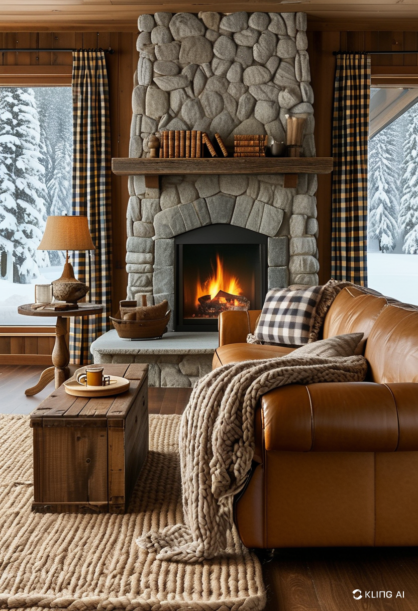
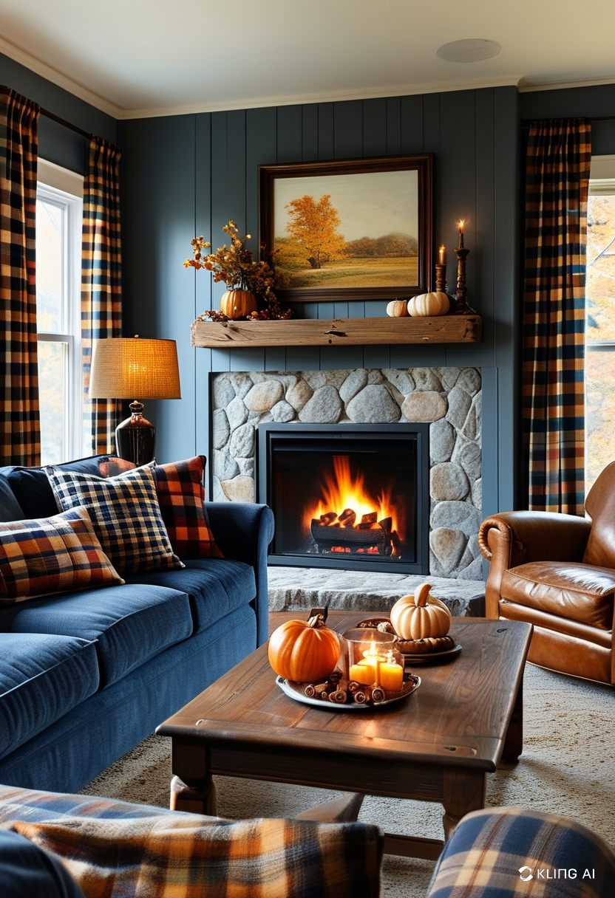
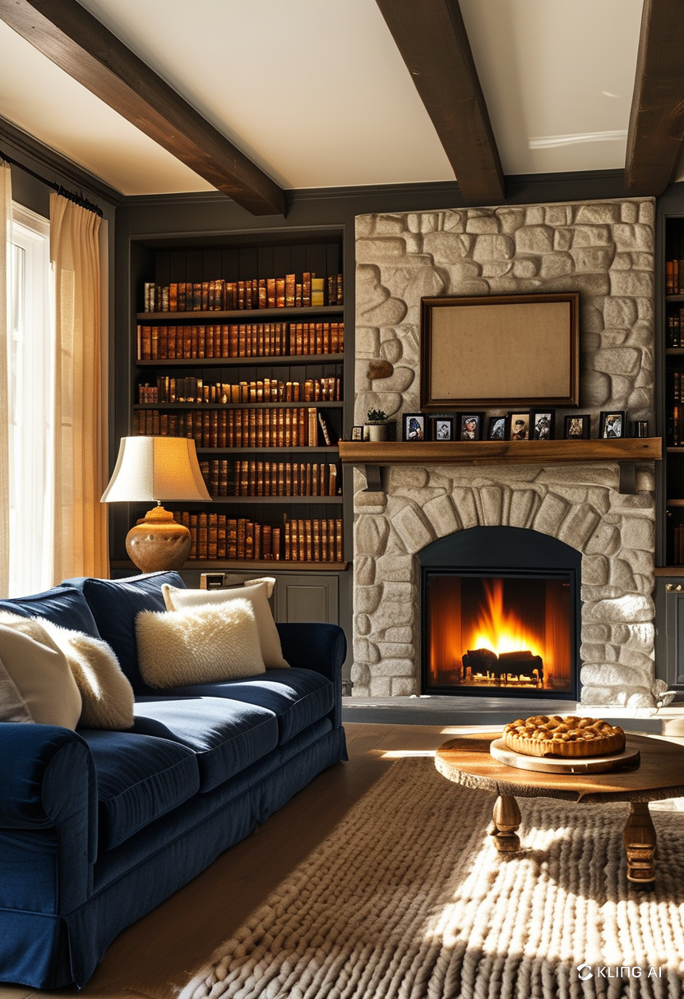
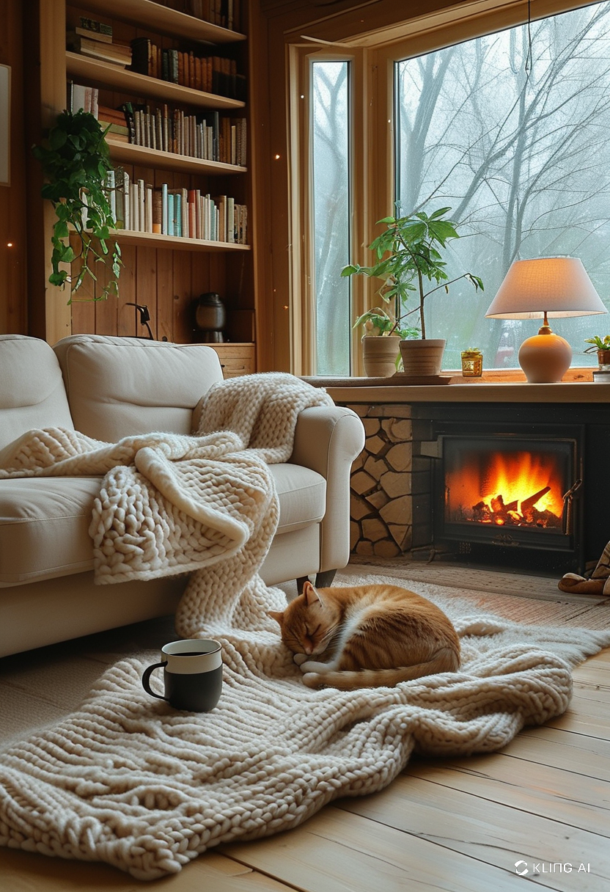

In today’s modern homes, the fireplace is no longer just a source of warmth—it has become a centerpiece that defines the aesthetic of the living room. Whether traditional, rustic, or minimalist, integrating a fireplace into your living room décor adds not only character but also value to your space. Here’s how to make your living room decor fireplace both functional and visually stunning.
The first step in designing a fireplace-centered living room is choosing a style that complements your overall interior theme. From sleek, wall-mounted electric fireplaces to grand stone hearths, there are countless options that cater to both modern and classic tastes. Consider if you want the fireplace to blend in or stand out as a bold focal point. Marble and tile work well in contemporary homes, while reclaimed wood mantels fit perfectly in farmhouse or vintage-themed settings.
Your choice of furniture can significantly influence how the fireplace is perceived. Arrange sofas and chairs in a way that frames the fireplace and encourages conversation. Avoid blocking sightlines and use area rugs to subtly define the seating area. Low-profile furniture works especially well in minimalist spaces, while plush, textured pieces create a cozy, inviting atmosphere that enhances the warmth of the fireplace.
Proper lighting transforms your living room from a daytime family hub into a nighttime retreat. Install dimmable overhead lights and add sconces or floor lamps to illuminate the fireplace area without overpowering it. Consider LED strip lights under the mantel or along the hearth to give a soft glow that highlights architectural details. Lighting should enhance the ambiance and draw attention to the textures and finishes around the fireplace.
Texture plays a vital role in living room decor fireplace arrangements. Natural materials like brick, stone, and wood introduce a tactile richness that enhances the overall feel of the space. Complement these with soft elements—think wool throws, velvet cushions, and woven baskets. Accessories like candles, vases, or curated artwork on the mantel can further express your personal style while keeping the décor layered and interesting.
Built-in or freestanding shelves flanking the fireplace offer both storage and decorative opportunities. Use them to display books, plants, and personal mementos, adding personality and life to the room. Keep the balance by not overcrowding the shelves—white space is just as important as filled space. Open shelving also helps visually expand smaller rooms while keeping focus on the fireplace.
One of the joys of having a fireplace is the ability to refresh its décor with the seasons. During winter, think pine garlands, lanterns, and cozy textiles. In spring and summer, switch to fresh flowers, coastal accents, or minimalist ceramic pieces. This flexible approach keeps the living room feeling updated and dynamic, allowing the fireplace to shine all year long.
In modern homes, it’s common to integrate technology around the fireplace, such as mounting a flat-screen TV above it. If doing so, ensure the proportions are right, and the design doesn’t overwhelm the fireplace itself. Use hidden wiring and recessed mounts to maintain a clean aesthetic. For a smarter space, consider installing voice-activated lighting or climate controls for added convenience and luxury.
Your living room decor fireplace setup should reflect more than just trends—it should echo who you are. Whether you aim for elegance, comfort, or innovation, the key lies in thoughtful planning and creative design choices. The fireplace can be a grounding feature that brings people together, tells your home’s story, and offers timeless appeal for years to come.
   